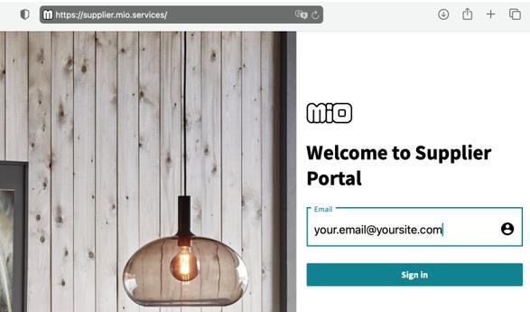
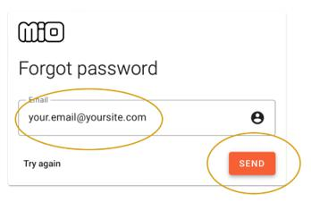

Supplier Portal – Setting a new password
There are 4 steps.
1.
First fill in your email address and click ”Sign in”
2.
Then click "Forgot password?"
Next step

3.
Make sure the email address is correct and press "Send".
4.
Now an email is sent to the above address. There is no warning or
message if the email is incorrect.
It might take a while for the email to reach you.
The email might get stuck in your spam filter.
The email contains a link that is valid for 24 hours.
Follow the link and activate your account.
See you inside Supplier Portal!
